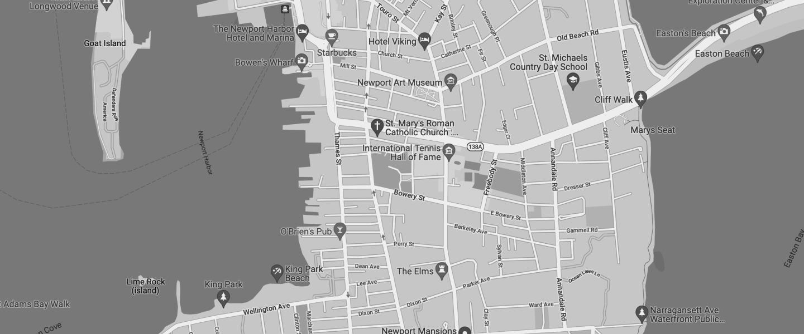

OUR
LOCATION
99 KING STREET
Newport
RI 02840
United States of America
Our newly opened gallery is located near the Edward
King House on 99 King Street, the Modern Art Gallery is
free to all visitors and open seven days a week from
8am to 9pm.